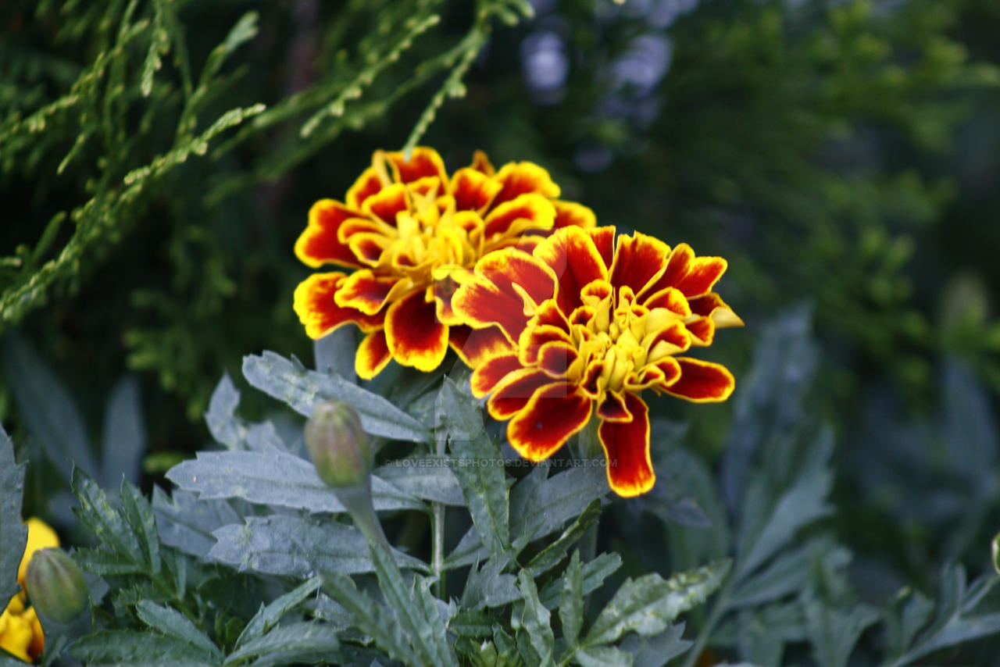

- Marigolds contain a certain scent called “alpha-terpineol,” which makes insects find them unappetizing. They also have a fragrance similar to basil, which insects don’t like to feed on.
- The African Marigold has the highest amount of phytochemicals, which is the type of fragrance that wards off insects. This also wards off bunnies, deer, and elk.
